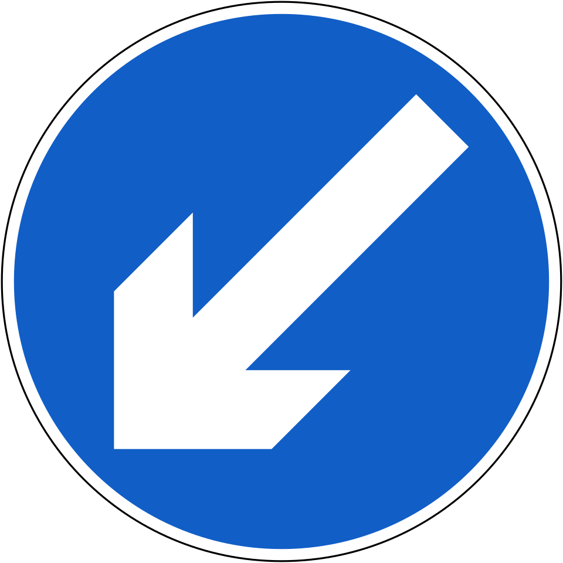
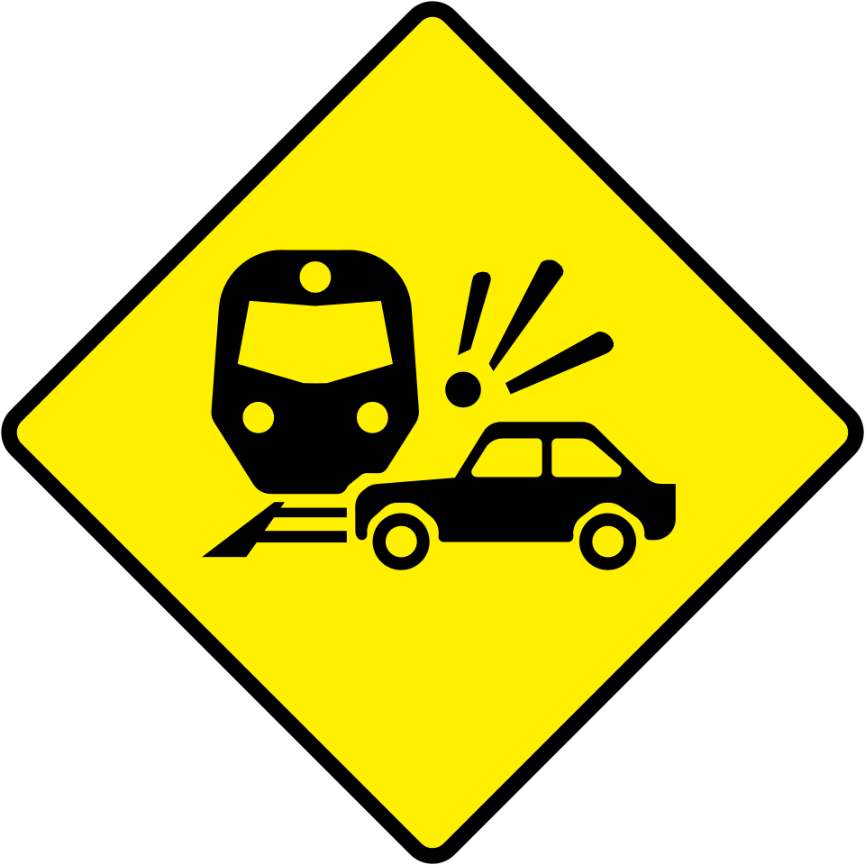
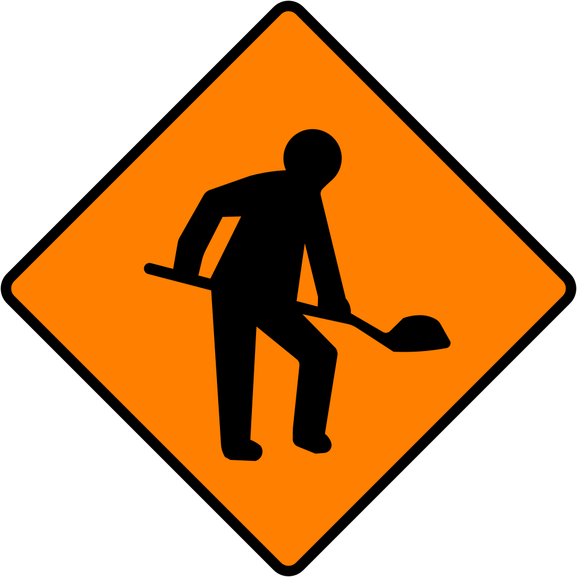
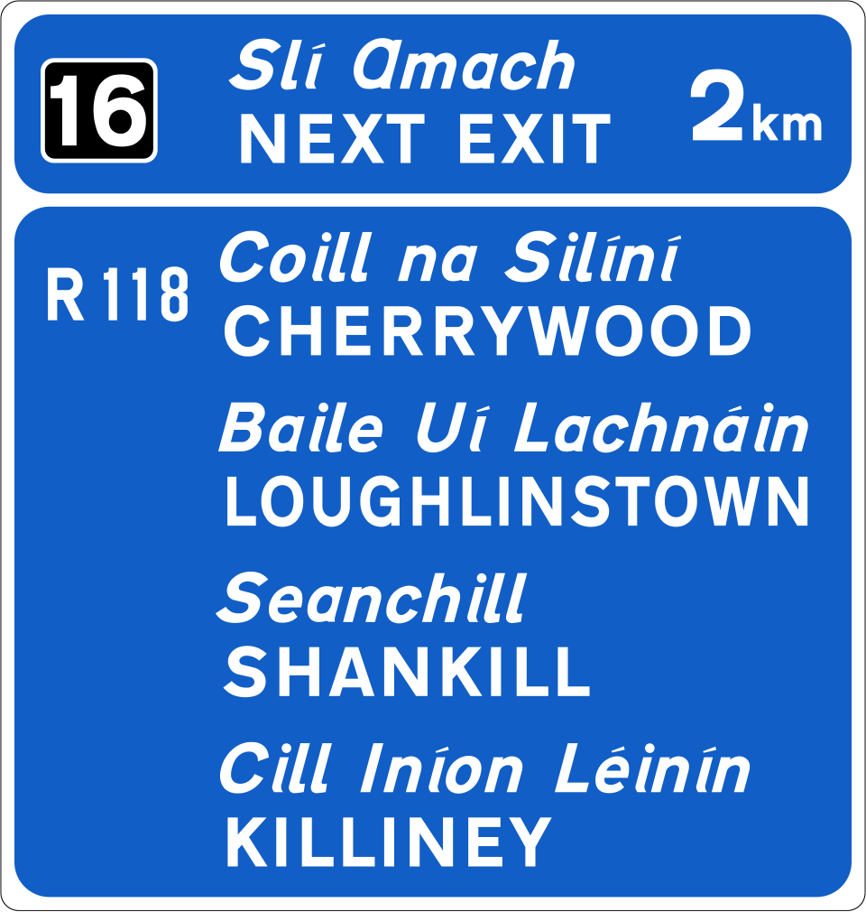
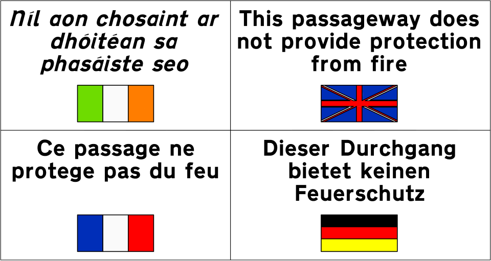

This website is designed for the user to easily access information and visuals about road signage in Ireland (mostly in an informal way). Every single bit(no pun intended) of information displayed on here is purely from safe and reliable news sources, such as government agency websites (and wikipedia but hey, it is getting more reliable than it used to be, since they have put strict regulations on editing, and plus, images and stuff there are on public domain so no attribution required, which is a HUGE bonus); not a single bit of them is made up by me. Disclaimer: However, you must take everything with a LARGE grain of salt since I am most likely to misinterpret a lot of stuff (just assume I will). This is just a fun, informal and lighthearted introduction to the world of road signs in Ireland. And, furthermore, the information on here is by-no-means complete; I left out most of the stuff because I am not that passionate about road signs. If you want to know more about these, you can dive into the wonderfully interesting world of road signs of Ireland in the citation session at the footer session down here or at the bottom of all pages. Enjoy!

Apparently, there are three main types of regulartory sings; mandatory, restrictive and prohibitory. Yea, quite a lot. They basically are the same with different colors and stuff. Mandatory signs are white with blue background and are circular in shape. For restrictive signs, it's black with white backgroud and red border; prohibitory signs are technically the same with restructive signs, just an extra one (or sometimes two) red line across the sign. Both restrictive and prohibitory signs are usually circular in shape but sometimes, they can be triangle-shaped.

For warning signs, they are usually black with yellow background and are usually diamond shaped. And they are introduced with the Traffic SIgns Regulations, 1956 (see citations) although a quite significant number of signs were added later.

For roadwork signs though, almost all of them are black with reddish orange backround and black borders (but frankly, every sign has black borders so far.) The interesting part for them is the shape of lane closure signs; they have different shapes for different kinds of rope. According to Wikipedia (I know it sounds like a captial offence quoting wikipedia but well, it is what it is), "Lane closure signs are diamond shaped for Level 1 roads (Urban and Low Speed Roads) and Level 2 roads (Rural Single Carriageway Roads), and square shaped for Level 3 Roads (Dual Carriageways and Motorways). "

There isn't much information about these but I'm pretty sure motorway signs are can be found on motorways. The interesting stuff about these is that unlike other signs, which are black in nature, they're white with blue backgrounds. They have have white symbols as well that are really big but you can find small yellow or green symbols in them as well.

OK, this one is an odd one out, outside of the big four, which are a normal bench; this one is quite interesting. (it's like a mix match of the other four) These road signs show directions, location of services and believe it or not, signs dedicated to tourists to show them which places might be interesting!! Really cool stuff. And for Ireland's pride, they are the most colorful as well, almost like a good old rainbow. They've got purple, green, yellow, black, white, red, blue, brown, you name it. It also features such diversity and quantity of symbols and words on such a small amount of space that even private equity would struggle buying up all of them.